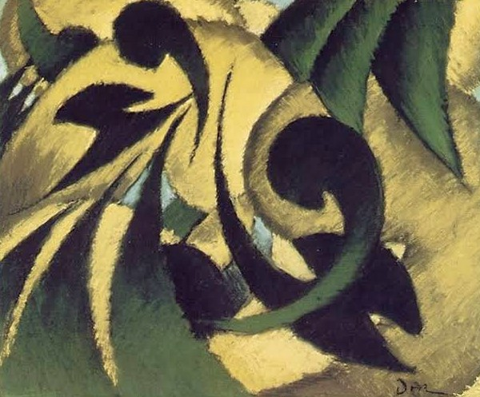
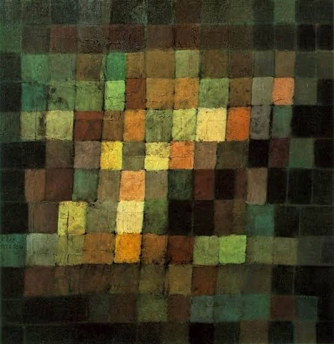
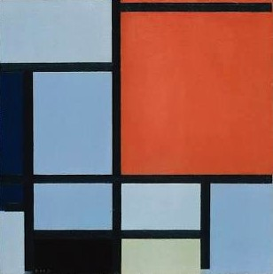
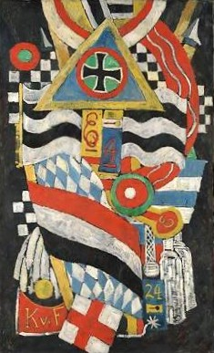

CAT-1: Materiality & Tactile Surface
Temporal Horizon: 1945–Present
Classifies physical supports characterized by inert mineral additives, marble aggregate, raw flax fiber, and load-bearing impasto relief. Focuses on structural surface resistance and material weight within post-war European abstraction.

The Metropolitan Museum of Art Open Access (CC0 Public Domain)
CAT-2: Conceptual Linguistics & Notation
Temporal Horizon: 1960–Present
Indexes systematic serial notation, non-phonetic graphemes, calendar date registers, and textual codification. Evaluates the integration of written linguistic units and counting registers as primary structural canvas elements.

The Metropolitan Museum of Art Open Access (CC0 Public Domain)
CAT-3: Process & Dragged Abstraction
Temporal Horizon: 1950–Present
Categorizes mechanical pigment traction, custom squeegee striations, layer stripping, and industrial surface friction. Focuses on the structural interplay between systematic paint removal and gestural accumulation.

The Metropolitan Museum of Art Open Access (CC0 Public Domain)
CAT-4: Global Contemporary Narrative Archives
Temporal Horizon: 1995–Present
Documents multi-institutional narrative registers, circular paper fiber substrates, cross-cultural mark-making, and participatory linguistic archives translated onto monumental textured canvas supports.

The Metropolitan Museum of Art Open Access (CC0 Public Domain)